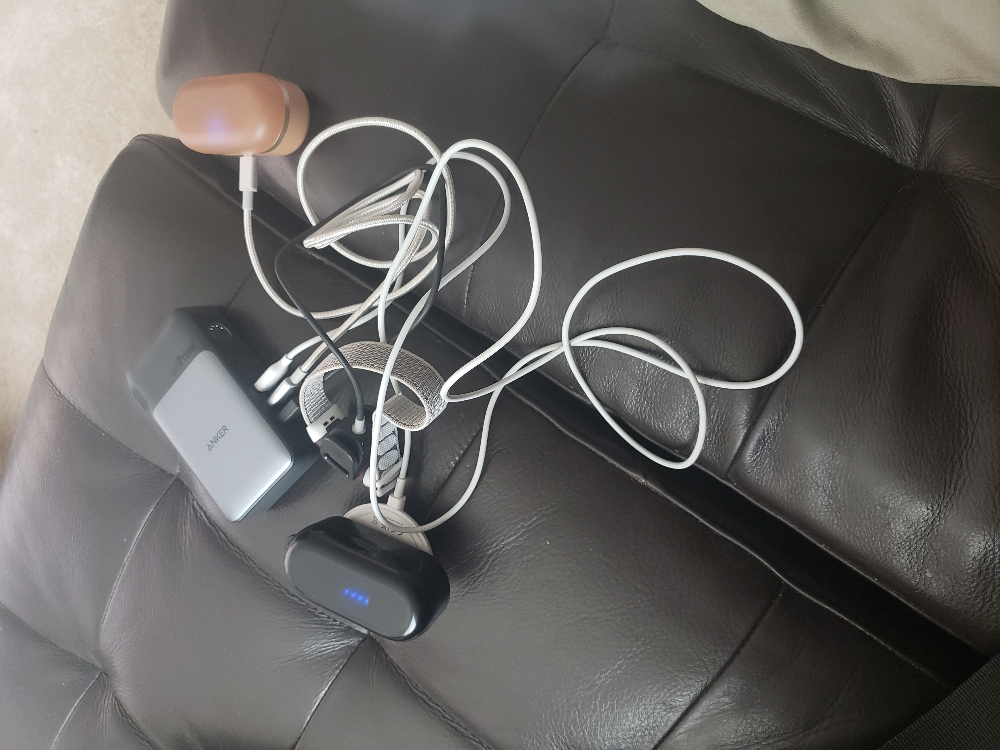
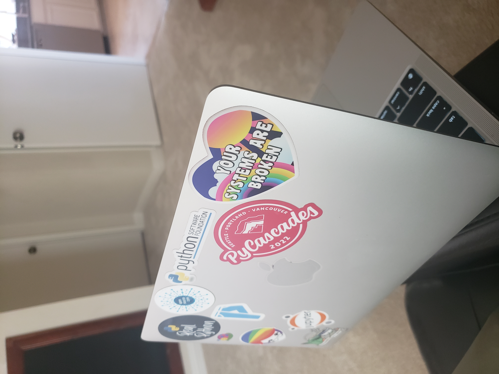
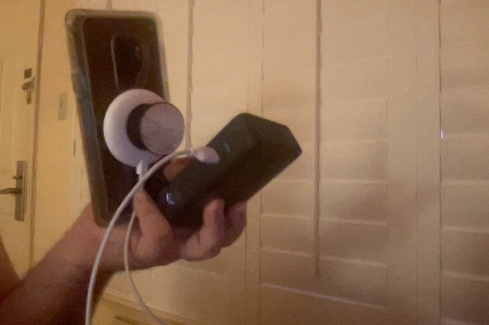
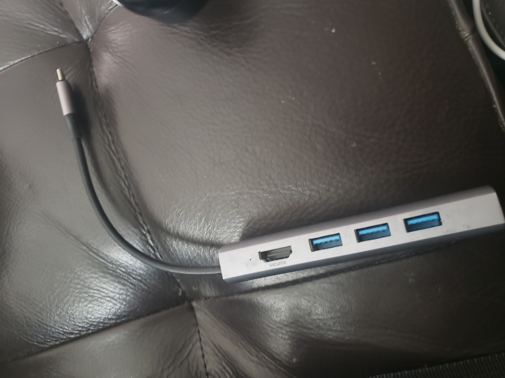
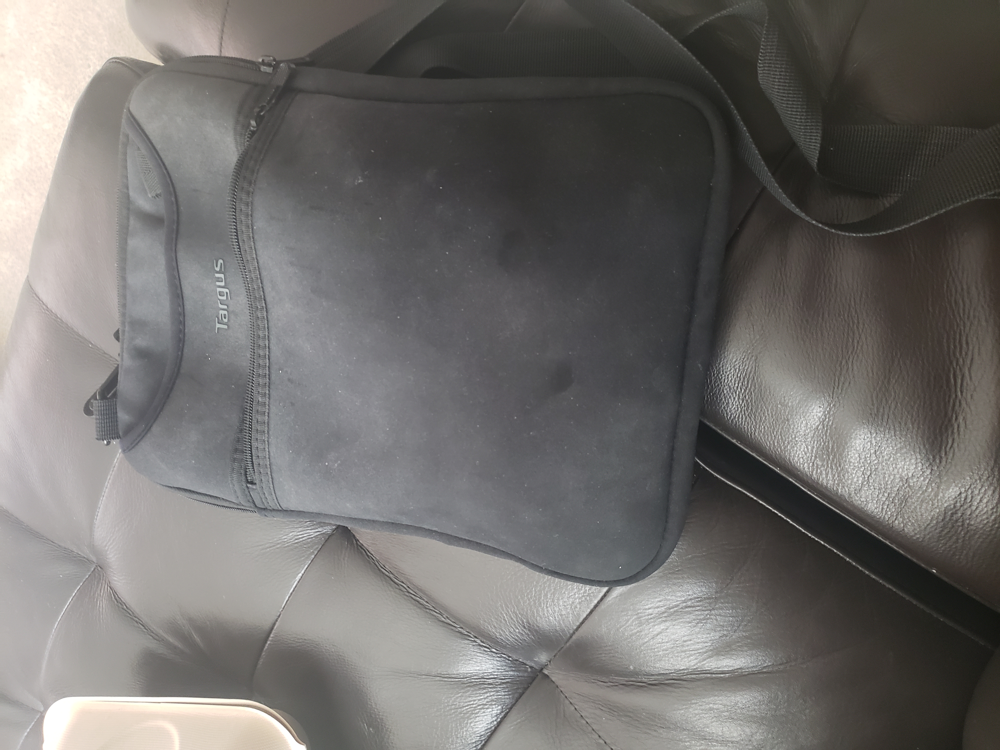

On The Go
Sun 14 August 2022 by Moshe ZadkaNow that travel is more realistic, I have started to optimize how well I can work on the go. I want to be able to carry as few things as possible, and have the best set-up possible.
Charging
The "center" of the mobile set-up is my Anker Power Bank. It serves two purposes:
- It is my wall-plug charger.
- It is my "mobile power": I can carry around 10k mAH of energy.
The charger has two USB-C slots and one USB-A slot.
Compute
For "compute", I have three devices:
- M1 MacBook Air
- Galaxy Samsung S9+ (I know it's a bit old)
- FitBit Charge 4
The S9 is old enough that there is no case with a MagSafe compatible back. Instead, I got a MagSafe sticker that goes on the back of the case.
This allowed me to get a MagSafe Pop-Socket base. Sticking a Pop-Socket on top of it lets me hold the phone securely, and avoids it falling on my face at night.
Ear buds
For earbuds, I have the TOZO T10. They come in multiple colors!
The colors are not just an aesthetic choice. They also serve a purpose: I have a black one and a khaki one.
The black one is paired to my phone. The khaki one is paired to my laptop.
I can charge the TOZO cases with either the USB-C cable or the PowerWave charger, whichever is free.
Charging
In order to charge the M1 I have a USB-C "outtie"/USB-C "outtie" 3 foot wire. It's a bit short, but this also means it takes less space. The FitBit Charge comes with its own USB-A custom cable.
For wireless charging, I have the Anker PowerWave. It's MagSafe compatible, and can connect to any USB-C-compatible outlet.
The phone is only charged by the wireless charging. The USB-C input is wonky, and can be incompatible with humid climates.
I connected a Pop Socket to the back of the PowerWave charger. This means that while the phone is charging, I can still hold it securely.
Together, they give me a "wireless charging" battery. The PowerWave connects to the phone, and the Power Bank has plenty of energy to last for a while while not connecting to anything.
I cannot charge all devices at once. But I can charge all devices, and (almost) any three at once.
Hub
The last device I have is an older version of the Anker 5-in-1 hub. This allows connecting USB Drives and HDMI connectors.
Case
All of these things are carried in a Targus TSS912 case. The laptop goes inside the sleeve, while the other things all go in the side pocket.
The side pocket is small, but can fit all of the things above. Because of its size, it does get crowded. In order to find things easily, I keep all of these things in separate sub-pockets.
I keep the Power Bank, the MagSafe charger, and the USB-C/USB-C cable in the little pouch that comes with the Power Bank.
The hub and FitBit charging cable go into a ziplock bag. Those things see less use.
The earbud cases go into the pocket as-is. They are easy enough to dig out by rooting around.
I wanted a messenger-style case so that I can carry it while I have a backpack on. Whether I am carrying my work laptop (in the work backpack) or a travel backpack, this is a distinct advantage.
The case is small enough to be slipped inside another backpack. If I am carrying a backpack, and there's enough room, I can consolidate.
Conclusion
I chose this set up for options.
For example, if my phone is low on battery, I can connect the PowerWave to the bank, leave the bank in the side-bag's pocket, and and keep using the phone while it is charging, holding it with the PowerWave's pop-sockets.
If I am listening to a podcast while walking around, and notice that the ear bud's case is low on battery, I can connect the case to the bank while they are both in the side-bag's pocket.
When sitting down at a coffee shop or an office, I can connect the bank to the wall socket and charge any of my devices while sitting there. As a perk the bank is charging while I'm sitting down.